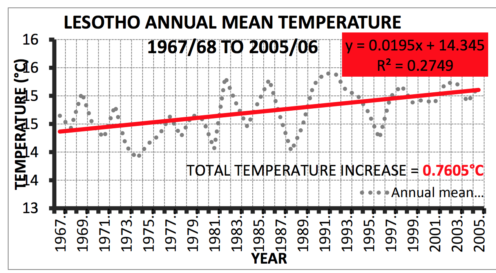

Ministry of Energy and Meteorology
September 2015
The Lima Call for Climate Action (Decision 1/CP.20)1 reiterated the invitation to all Parties to develop and communicate Intended Nationally Determined Contributions (INDC) as their ‘contributions’ toward achieving the ultimate objective of Article 2 of the United Nations Convention on Climate Change (UNFCCC): “to achieve… stabilization of greenhouse gas concentrations in the atmosphere at a level that would prevent dangerous anthropogenic interference with the climate system.” Recognizing concerns about the legal nature of INDCs, the decision also noted that arrangements for INDC preparation and submission were “without prejudice to the legal nature and content of the intended nationally determined contributions of Parties or to the content of the protocol, another legal instrument or agreed outcome with legal force under the Convention applicable to all Parties”. Further, the Twentieth Conference of the Parties (COP) in Lima agreed that special provisions would apply to Least Developed Countries (LDCs) and Small Islands Developing States (SIDS), i.e. that their INDCs “may communicate information on strategies, plans and actions for low greenhouse gas emission development reflecting their special circumstances”. This means that while the INDCs of developed countries are expected to include absolute or economy-wide emission reduction commitments, LDCs can draw on specific strategies, plans or projects to formulate their contributions, and specify the component of the contribution that would be conditional upon receiving international finance or other support.
It is against this backdrop of the foregoing that the Kingdom of Lesotho is herein submitting her Intended Nationally Developed Contributions. This report followed a series of intensive national consultations, on the nature of our development trajectory between 2020 and 2030 and the potential greenhouse gas emissions reductions. However, cognizant to the fact that Lesotho is highly vulnerable to the impacts of climate change, it has thus also reported on adaptation in line with the collective position of the Africa Group.
Thus, this report is a summary of our national mitigation and adaptation contributions.
| BAU | Business As Usual |
| CAREI | China Association of Rural Energy Industry |
| CBO | Community Based Organisations |
| CDM | Clean Development Mechanism |
| CFLs | Compact fluorescent Lamps |
| COP | Conference of the Parties |
| CSES | Centre of Sustainable Environmental Sanitation |
| DFID | Department for International Development |
| EE | Energy Efficiency |
| EEP | The Energy and Environment Partnership |
| FILLI | Forestry Initiative for Landscape and Livelihoods Improvement |
| GDP | Gross Domestic Product |
| GEF-SGP | Global Environment Facility - Small Grants Programme |
| GHG | Greenhouse Gases |
| GWh | Gigawatt Hour |
| INDC | Intended Nationally Determined Contributions |
| IPCC | Intergovernmental Panel on Climate Change |
| LDCs | Least Developed Countries |
| LHDA | Lesotho Highlands |
| LMS | Lesotho Meteorological Services |
| LPG | Liquid Petroleum Gas |
| MDGs | Millennium Development Goals |
| MRV | Measurement, Reporting and Verification |
| NAPA | National Adaptation Programme of Action |
| NCCC | National Climate Change Committee |
| NGOs | Non-Governmental Organizations |
| NSDP | National Strategic Development Plan |
| PRS | Poverty Reduction Strategy |
| RE | Renewable Energy |
| REDD | Reducing Emissions from Deforestation and Forest Degradation |
| SADC | Southern African Development Community |
| SAPP | Southern African Power Pool |
| SIDS | Small Islands Developing States |
| SNC | Second National Communication |
| TED | Technologies for Economic Development |
| UNFCCC | United Nations Framework Convention on Climate Change |
| USTB | The University of Science and Technology Beijing |
In the year 2000, Lesotho adopted a Vision 2020 statement to guide all development goals, objectives and aspirations in the medium and long term. The vision statement overlapped with Lesotho accession into the Millennium Development Goals (MDGs). Two key strategies were in particular aimed at fulfilling the Vision 2020 pronouncements. The first of these was the Poverty Reduction Strategy (PRS) 2005-2007 which sought to reduce poverty from 56.6% in the base year of 2003 to 29% at the end of the plan period. The second was the National Strategic Development Plan (NSDP):2012-2017 which embraced the key poverty targets of the PRS while seeking to, hence forth, consolidate all development goals with an associated Public Sector Investment Programme for the plan period.
In addition, a number of sector specific policies were adopted pursuant to the aspirations of the NSDP. The Lesotho Energy Policy 2015 envisions that energy shall be universally accessible and affordable in a sustainable manner, with minimal negative impact on the environment and sets goals to reduce in particular fuelwood usage in the national energy consumption including other fossil fuels. The policy further provides for mitigation of climate change, through energy efficiency and promotion of renewable energy. The Draft Strategic Plan for the Ministry of Energy and Meteorology (2015/16 to 2020/21) projects key strategic intentions in both climate change mitigation and adaptation including national energy initiatives. National Rangelands Management Policy 2013 seeks to guide range and natural resources management in the Kingdom. Lesotho has formally committed with support from the European Union, to a process of developing a new National Climate Change Policy and Sustainable Energy Policy.
Climate change is already impacting on Lesotho hence robust integrated policies and strategies are required to improve the adaptive capacity of Kingdom. Lesotho has a high exposure to climate variability and extremes which are expected to increase in frequency and intensity in the future. A sectoral vulnerability assessment to climate change was carried out on key sectors: agriculture, water resources, forestry, rangelands, and health. Subsequently a National Adaptation Programme of Action (NAPA) was developed in 2007 outlining future adaptation needs to address projected climatic changes.
The trend analysis of temperature over most areas in Lesotho (Fig. 1) show increases in both annual maximum and minimum temperatures between 1968 and 2006 with minimum temperatures warming more than the maximum temperatures with the most rapid warming in the early 1980s.

Fig.1. Mean annual temperature in Lesotho: 1967 – 2004.
In the 1997/98, GCM simulations of future (2030, 2050 and 2075 relative to 1961-1990) climate change scenarios were generated using an ensemble of six GCMs. More recent climate change simulations show temperatures increasing by about 1 °C by 2030, 1.5-2.0 °C by 2050, and by about 2.5-3.5 °C by the 2080s while winter rainfall shows strong decreases, with no change in summer and autumn rainfall, and gradually increasing spring rainfall (Dejene et al., 2011)2. In summary the following climate change projections appear likely for Lesotho: an increase in annual mean temperature of approximately 1.0 °C (2030), 2.0 °C (2050) and 3.5 °C (2080) is likely; a moderate drying in late autumn/winter is expected and moderate increases in spring/summer rainfall, with stronger spring/summer wetting towards the end of the century.
Climate change could well undermine national efforts to attain all goals encapsulated in the National Vision 2020 statement and erode achievements that have already been attained over the last few decades, and undermine poverty reduction efforts. Lesotho does not have an officially expressed medium to long term national adaptation plan to climate change. However, our aspirations are expressed explicitly or implicitly in all policy documents, and NSDP. The apparent national adaptation goal (s) towards 2030 embraces all tenets of the MDGs which seek to reduce and /or facilitate national resiliency against climate change shocks especially production decline leading to food insecurity; gender vulnerabilities to climate-change-related impacts especially natural resources e.g. declining quantity and quality of drinking water; environmental degradation; erosion of basic support systems for majority of livelihoods. These are implicit aspects of a long term national adaptation vision to be refined in the national adaptation plan in the pipeline.
The government of Lesotho has over the last 20 years invested heavily in tree planting and small woodlot reserves. Pursuant to this policy, the Forestry Act of 1998 was promulgated and a new National Forest Policy was launched in 2008 to pursue sustainable forest management; poverty reduction strategy through social and economic dimensions of forestry development and enhancing people’s participation in the ongoing Land Rehabilitation Program of the Government of Lesotho.
In the absence of an official national adaptation plan, the NAPA options remain the best indication of the nation intentions for adaptation (Table 1).
| Table 1: Prioritised climate change adaptation options /plans. 2007. | |
|---|---|
| Priority Program areas | Estimated Cost |
| Improve Resilience of Livestock Production Systems Under Extreme Climatic Conditions in Various Livelihood Zones in Lesotho | 3,980,000 |
| Promoting Sustainable Crop Based Livelihood Systems in Foothills, Lowlands and Senqu River Valley | 5,235,000 |
| Capacity Building and Policy Reform to Integrate Climate Change in Sectoral Development | 2,260,000 |
| Improvement of Early Warning System Against Climate Induced Disasters and Hazards | 1,920,000 |
| Securing Village Water Supply for Communities in the Southern Lowlands | 2,170,000 |
| Management and Reclamation of Degraded and Eroded Land in the Flood Prone Areas | 1,966,000 |
| Conservation and Rehabilitation of Degraded Wetlands in the Mountain Areas of Lesotho | 1,690,000 |
| Improvement of Community Food Security Through the Promotion of Food Processing and Preservation Technologies | 1,620,000 |
Since 2007, a number of efforts were undertaken by various roles players in the climate change adaptation field in Lesotho with support from government of Lesotho, development partners and NGOs /community based organizations currently at different implementations stages. These can be grouped into a few categories.
| Project name | Implementation State | |
|---|---|---|
| Complete / On-going | Planned | |
| Developing capacity for climate change adaptation capacity in the agricultural sector | 2009 – 2011 | |
| Conservation agriculture: advocacy, extension / training, research integration into formal curricula | 2005 to date | |
| Sorghum breeding for high yield and drought tolerance | 1996 to date | |
| High efficiency irrigation systems: Gravity & Drip | 1995 to date | |
| Lesotho Block Farming Initiatives | 2005 to date | |
| Smallholder Agriculture Development Project – Cropping Systems | 2011-2017 | |
| Develop National Adaptation Plans | 2015-2020 | |
| Develop Climate Change Policy and Strategy | ||
| Integrate Climate Change into sectoral policy and strategies | ||
| Develop mechanisms to improve access to climate change adaptation technologies | ||
| Project name | Implementation State | |
|---|---|---|
| Complete / On-going | Planned | |
| Lesotho wool & mohair improvement project | 2015 - 2022 | |
| Smallholder Agriculture Development Project – Livestock | 2011-2017 | |
| Land Rehabilitation Program | ||
| Mechanism to Implement the Forestry Initiative for Landscape and Livelihood Improvement Program | 2015-2016 | |
| Forestry Initiative for Landscape and Livelihoods Improvement (FILLI) Program | ✓ |
| Wetlands restoration and rehabilitation project | 2010 -2014 | ||
| Lesotho Water Development Program | Lesotho Highland Water Development Project II | Planned | |
| Lesotho Lowlands Water Scheme I | 2001 - 2003 | ||
| Lesotho Lowlands Water Scheme II | ✓ | ||
| Africa Adaptation Project | 2009-2012 | |
| Improvement of Early Warning System to Reduce Impacts of Climate Change and Capacity Building to Integrate Climate Change into Development Plans – Vulnerability Mapping | 2013-2015 | |
| Improvement of Early Warning System to Reduce Impacts of Climate Change – Phase II | 2016 - 2020 | |
| Improvement of Capabilities to Cope with Natural Disasters caused by Climate Change | 2011 - 2014 | |
| Eco-system based climate change adaptation in southern Lesotho | 2015 - 2021 | |
| Increasing Capacity for Climate Change Adaptation in the Agriculture Sector – I | 2008-2011 | |
| Increasing Capacity for Climate Change Adaptation in the Agriculture Sector – II | 2015-2019 | |
| Climate Change Policy Project | 2016-2017 | |
| Lesotho Climate Change Adaptation of Small-Scale Agricultural Production | ✓ | |
| Develop National Adaptation Plans | 2015-2020 | |
| Develop Climate Change Policy and Strategy | ||
| Integrate Climate Change into sectoral policy and strategies | ||
| Develop mechanisms to improve access to climate change adaptation technologies |
Most of the climate change adaptation activities are implemented through capital projects with a larger portion of the budget sourced from development partners but the distribution shows that government of Lesotho pays its equitable share of adaptation costs (Table 2). The government co-financing of donor funded projects is mainly through in-kind contribution.
| Table 2. Climate Change Adaptation projects implemented in Lesotho since 2012/13 – 2016/17 | |||
|---|---|---|---|
| Name of Project | Government Contribution ($US x 106) | Development Partner Contribution ($US ‘000) |
Development Partner (s) |
| Agriculture and Food security | 28.76 | N/A | |
| Watershed Management | 68 800 | N/A | |
| Framework for strengthening capacity for climate change adaptation in Agriculture | 3 600 | N/A | |
| Climate change investment program (MDP) | N/A | ||
| Public sector investment program (MDP) | N/A | ||
| Forestry Poverty Alleviation Programme | 49 | N/A | |
| Source: PSIP 2012-2017 | |||
| Projects with External Support | |||
| Name of Project | Government Contribution ($US x 103) | Development Partner Contribution ($US x 103) |
Development Partner (s) |
| Development of climate change policy and strategy | N/A | 848 | EU |
| Improvement of Early Warning System to Reduce Impacts of climate change and hazards | 318 | 1,735 | GEF |
| Small Holder Agricultural Development | 973 | 7,773 | GEF |
| Reducing Vulnerability from climate change in the Foothills, Lowlands and the Lower Senqu River Basin | 26,000 | 8,400 | GEF |
| Improvement of Early Warning System to Reduce Impacts of Climate Change and Capacity Building to Integrate Climate Change into Development Plans | 1,600 | 1,800 | GEF |
| Strengthening Capacity for climate change adaptation through support to integrated watershed management programme in Lesotho | 7,800 | 3,600 | GEF |
| Adaptation of Small-scale Agriculture Production | 13,000 | 4,300 | GEF |
| Wool and Mohair Promotion Project | 7,000 | 29,000 | IFAD,OPEC, ASAP |
| Smallholder Agricultural Development | 999.7 | 6557 | IFAD |
| Source: Ministry of Energy and Meteorology, August 2015 | |||
In addition, a number of adaptation projects are undertaken at household and community levels by NGOs and CBOs (Table 3).
| Table 3. Number of GEF-SGP in Lesotho accessed by non-governmental organizations (NGO), community based organizations (CBO) and the private sector for climate change adaptation. | ||||
|---|---|---|---|---|
| Grantee Types | Number of GEFSGP Projects | Grant Amount | Co-financing (Cash) | Co-financing(in- Kind) |
| Funding Amounts (in ‘000 USD) | ||||
| NGO | 29 | 965 | 216 865 | 959 |
| CBO | 18 | 560 | 157 | 467 |
| Other | 1 | 50 | 0 | 126 |
| Source: Ministry of Energy and Meteorology, August 2015 | ||||
To achieve national resiliency to climate change, the NSDP has outlined the following strategies: i) Integrating of climate change into sectoral plans and programmes; ii) Climate proofing investments by upgrading standards for infrastructure development; iii) Improving access to climate change adaptation technology and use; iv) Improving environmental and climate change governance through undertaking vulnerability assessments and utilising them for medium to long-term forecasting, policy and planning. Despite these noble aspirations, the country currently does not have a long term national adaptation plan. Thus there is an urgent need for financial support to complement the on-going processes of policy development by taking the process further to the development of an adaptation plan and research.
Specific barriers to adaptation in Lesotho are:
For Lesotho to adaptation there is urgent need for provision of finance, capacity building and technology. These also underscore the need for research support in climate change adaptation. Sectorally, there is an inadequate adaptation capabilities in the sectors such as Energy, Agriculture, Land Use, Land Use Changes and Forestry, Health, Water and in the aspects of data collection, processing and provision by the sectors. Consequently, there is need to:
Lesotho’s climate change adaptation process will be monitored using the following indicators: Change in the level of vulnerability; Number of people benefiting from adaptation activities; Degree of integration of climate change adaptation into sectoral policies and plans; Resources spent on adaptation to reveal the climate relevant share of the total public expenditure over time. However, proper implementation of the monitoring and evaluation commitment is conditional on enabling finance.
Women have a unique relationship with natural resources which render them more vulnerable to climate change. They are responsible for food security of families through food collection, crop production, meal preparation, and often through cultivation techniques. One of Lesotho’s unique features is women’s dominance in piggery and poultry farming, and this role creates an added vulnerability to climate change, due to their economic dependence on these industries. With responsibilities within the household, such as child-rearing, domestic management and meal preparation, women often work longer hours and any added challenges such as those imposed by climate change, will increase their vulnerability and workload. Therefore, climate change adaptation interventions need to include measures to reduce women’s workload.
In Lesotho the formative years of the boy child are occupied by herding of livestock to the detriment of their education. Climate change will particularly affect them negatively as good grazing land is gradually pushed further away from the village by its compounding negative effects on natural resources. In addition, extreme weather events like heavy snow will increase their risk of life in the remote cattle posts more than any other group in society.
The timeframe for mitigation contribution goal is 2030.
Lesotho’s GHG emissions are minimal due to its predominant dependence on hydropower with a grid emission factor is 0.0038 tCO2/GWh. The proportional contribution of three key sectors is agriculture (63%), energy (31%) and waste management (6%). This reflect a picture of Lesotho’s socio-economic circumstances: an economy dependent on natural resources, a low but growing energy sector and industrial sector that is still in its infancy.
Emissions from energy sector make a total of 1,079.43 Gg CO2eq mostly from residential fuel combustion (51%) followed by combustion of liquid fossil fuels in the transport subsector (29%). Residential emissions emanate from the use of biomass, coal, Liquid Petroleum Gas (LPG) and paraffin. CO2 is the major contributor, making about 75% of total sectoral emissions. Energy sector emissions showed a consistently increasing trend reaching 30% between 1994 and 2000.
Emissions from the agriculture sector make a total of 2,230.43Gg CO2e (Fig. 3). Nitrous Oxide (N2O) emissions are the largest GHG (61.6%) of the total emissions. Other emissions are Methane (CH4) from enteric fermentation of domestic livestock and manure management from domestic livestock (37%). Crop production is expected to increase between 2014 (114, 804 Mg) and 2030 (250,000 Mg) primarily due increased intensive crop production systems and increased use of inorganic fertilizers. In 2012, Lesotho imported more than 9,000 Mg of nitrogen-based chemical fertilizers, and used an estimated 9,807 Mg of organic fertilizers (96% Kraal manure).
The waste sector in Lesotho is divided into two distinct sectors; the solid waste management (CH4 emissions) and waste water handling (CH4 and N2O emissions). The sector was assessed for emissions from domestic, commercial and industrial waste. The total emissions from this sector are 199.63 Gg CO2eq over 80% of the CO2eq emissions is methane. The bulk of these emissions are from industrial waste water handling. Overall, GHG emissions in this sector have doubled since 1994. The sector emissions are driven by the increasing per capita solid waste generation among population especially in the urban areas. Deposal of solid waste to land with relatively deeper and sanitary landfill sites is becoming common practice in urban waste management.
The major assumption under the mitigation scenario in the energy sector is the implementation of Lesotho Energy Policy 2015 and Draft Lesotho Renewable Energy Policy 2013 which seek to increase energy efficiency significantly and shift the energy supply to more climate friendly technologies. The energy sector will require additional investment of about USD 15 million in 2020 and USD 20 million in 2030. These investments will be needed in energy-efficient equipment, grid extension; rural electrification projects (offgrids and mini-grids) that are ultimately expected to reduce emissions significantly. However, Lesotho cannot afford these levels of investment without financial support.
| Energy Sector Mitigation Policy /Program and Targets | |
|---|---|
| Mitigation Policy /Programs | Targets & Assumptions |
|
|
|
|
|
|
|
|
|
|
|
|
Furthermore energy efficiency has large mitigation potential in the residential sector. Households commonly use incandescent electric bulbs for lighting. Replacement of these bulbs with Compact Fluorescent Lamps (CFLs) can save as much as 80% of electricity used for lighting. If 40,000 households are using electricity for lighting, and each installs two (2) CFLs replacing incandescent bulbs, the reduction potential in a CFL programme would be about 3,700 tCO2e per year based on an average saving of 50 kWh per bulb per year (using the SAPP grid emission factor of 0.92). However, all this efforts are conditional to financial support.
| Buildings (Residential, Commercial and Institutional) Sector Mitigation Options & Targets | |
|---|---|
| Mitigation Policy /Program | Targets & Assumptions |
|
|
|
|
|
|
|
|
|
|
|
|
|
|
We also have significant albeit conditional emission reduction potential in the road transport sector. Road transport emissions increased by approximately 2.5% per year between 2000 and 2009. Consumption of petrol and diesel by road transport produced a total of 0.28 MtCO2eq in 2009. The main contributors were freight transport at 0.18 MtCO2eq (64%) and passengers transport at 0.10MtCO2eq (36%). In 2000 road transport contributed 29% to total energy emissions and 8.99% of the total GHG emissions. In 2014, Lesotho imported 225.3 million litres of refined oil products (diesel, petrol and paraffin). Emissions from combustion of 225 million litres of diesel (or petrol) are about 90,000 tCO2e/year.
The most promising transport mitigation options are vehicle efficiency, modal shift from private to public transportation, investments in fuel-efficient vehicles. These measures will need to be driven by policies and must be enforced. In this scenario, the subsector will require additional investment to the tune of USD 1.5 million in 2020 and USD 2.0 million in 2030. Limited transport planning and management has resulted in inadequate investment in infrastructure for non-motorized transport and pedestrian traffic.
The national dependence on agricultural wastes for energy is cause for concern significant health and GHG emissions. There are approximately 310,000 households in Lesotho dependent on small-scale farming. If 20% of these rural households (approximately 60,000 households) had the sufficient number of livestock (35 cattle) for installing a domestic biogas digester to generate gas for cooking, the traditional use of firewood could be reduced (the dung from two cows typically suffices to meet the cooking requirements of a household, Bajgain & Shakya (2005)). By using the suppressed demand method for this potential emissions reduction calculation, and assuming a daily use of 0.5 litres of paraffin for cooking, the potential reduction would be 60,000 households * 0.5 litres* 2.6 kgCO2/litre* 365 days/1000 = 29,200 tCO2/year. Construction of a 6 m3 bio-digester cost USD 1.800. Construction of 60,000 bio-digesters will cost USD 108 million.
| Waste Sector Mitigation Options and Targets | |
|---|---|
| Mitigation Policy/ Program | Targets & Assumptions |
| Developing targeted programs to raise awareness of importance of, and opportunities for, reducing waste at source and recycling |
|
Promoting commercial and household waste recycling through: Development of infrastructure (e.g. collection systems, depots, and processing plants, etc.) to support recycling activities Design of incentives to promote recycling activities |
|
| Construction of proper landfill sites in all 10 districts of Lesotho with methane recovery facilities | |
|
|
Tree planting in degraded forest lands present a significant potential for climate change mitigation in Lesotho. According to the latest mapping inventory from 2012, the forested area of Lesotho is estimated to be 49,485 ha, which translates to approximately 1.6% of the country’s area. Lesotho's forests contain 2 million metric tons of carbon in living forest biomass. One of the key objectives of the National Forestry Policy (2008) is to increase tree cover from around 1% to at least 5% (152,000 ha) by the year 2020. However, deforestation rate of 0.50% per year lead to loss of 200 ha between 1990 and 2010. If this trend is reversed, it could potentially produce nearly 38,902 tCO2 of emission reductions for each area of 200 ha of tree cover. These calculations are based on an estimation of the amount of carbon stored in the country’s forests per year to 5tC/ha, and a conversion factor of 1 ton of biomass carbon to an equivalent of 3.67tCO2.
Given, that biomass consumption remains the main source of domestic energy, and energy in small-scale commercial sectors, it will take a radical substitution of household fuel supply. Such a fit would also require significant financial support to Lesotho towards to subsidize fuel-efficient cook stoves, and alternative fuels and techniques for cooking, which altogether might have a significant impact on GHG emissions. The cost of reforestation option would amount to USD 24 million between 2015 and 2030 for the 120,000 ha of land to be reforested with an initial establishment cost of USD 200/ha. Therefore, the mitigation scenarios advanced for the forestry sector are conditional on financial support.
The main opportunities for mitigation consist of energy efficiency and demand management, coupled with increasing investment in a renewable energy programme in the electricity, Buildings (Residential, Commercial and Institutional) and Waste sectors. Lesotho is committed to reduce unconditionally 10% of its GHG emissions by 2030 compared to a Business-as-usual (BAU) scenario. The conditional target is 35% by 2030.
In the period 2015-2030, additional investments (relative to BAU scenario) needed for realization of the mitigation scenario are estimated at USD 1.2 billion, while for realization of the higher ambition mitigation scenario are estimated at USD1.8 billion.
| Project Title | Estimated Cost (US$) |
|---|---|
| Rehabilitation of 2 MW Mantšonyane Hydropower plant | 1 million |
| Implementing energy efficiency measures, including the removal of institutional barriers to energy efficiency improvements; | 10 million |
| Promotion of new and renewable energy technologies in mitigating climate change | 351.46 million |
| Rehabilitation, modernization, re-equipment of Semonkong mini-hydro power plant and enhancing generation capacity up to 1 MW | 2 million |
| Enhanced forest sinks: Planting of 120,000 ha of forests to meet the public demand for fuel wood used for heating and cooking | 10 million |
| Capacity building in sustainable forest management | 500,000 |
| Rural electrification using stand-alone systems and mini-grids | 10 million |
| Dissemination of efficient biomass cook-stoves and efficient biomass space heating stoves | 2 million |
Lesotho has already undertaken several actions to support a low carbon development trajectory including extensive investigation into its hydro and wind power potential, embarking on rural electrification and afforestation projects. However, Lesotho’s potential to contribute to global mitigation efforts will not be realized without greater support from the international community. This includes not only financial support, but also technology transfer and help with capacity-building initiatives. The table below summarizes the key mitigation initiatives that would greatly enhance Lesotho’s capacity in this regard.
| Project Title | Estimated cost (US$) |
|---|---|
| Expansion of Renewable Energy Capacity: Promote electricity generation from renewable energy sources to increase the share of renewables to 10–20 per cent by 2030; | 351.46 million |
| Establishment of a specialized national institution responsible for measurement, reporting and verification (MRV), and the development of a national MRV system to: document greenhouse gas (GHG) emissions from agriculture | 350 million |
| Development and construction of an estimated 1200 MW Pumped Storage Power Plant at either Kobong or Monontša under the auspices of LHDP Phase II. | 1.8 billion |
| Development of Small Hydropower (SHP): A potential of up to 40 MW for SHP exists in perennial rivers (Hydropower generation master plan) | 600 million |
| Capacity-building for the use of tools to enable accurate and full GHG accounting; | 4050 million |
| Construction of wind farms on potentially productive territories: Letšeng-la-Terai approximately 35 kw, Quthing etc. | 4 million |
| Enhancing power generation capacity of Muela Hydropower Station up to 125 MW | 2 million |
| Construction of municipal solid waste incineration plants in urban areas | 1 million |
| Landfill gas recovery and flaring clean development mechanism (CDM) Project | 500,000 |
| Determining local emission factors and minimum data sets for model verification in the Agriculture, Water Resources, Energy, Forestry and Other Land-Use, Industrial Processes and Waste Management Sectors | 5 million |
| Development of appropriate agricultural technologies for mitigating and adapting to climate change in different agro-ecological zones of Lesotho: | 1 million |
Finally, international support is critical to enable Lesotho to implement the actions enshrined in its National Energy Policy, Second National Communication (SNC), National Strategic Development Plan and other sectoral policies and plans.
Some NGOs are also investing in GHG mitigation projects. These include: i) Initiatives on carbon trading promoted by SMARDT; ii) Save80 Stove funded by Atmosfair and DHL in the private sector; iii) The Energy and Environment Partnership (EEP) funded project – Piloting Implementation of Prefabricated Biogas Plants in Rural Areas in Lesotho under Technologies for Economic Development (TED) Lesotho; iv) Energy Efficient ISILIE project by TED under GEF-SGP funded projects – The goal is to develop adaptation interventions to address the impacts of climate change and enhance the resilience of livelihoods and ecosystems in the highlands of Lesotho.
EEP promotes renewable energy (RE), energy efficiency (EE), and clean technology investments. Jointly funded with €207, 900.00 by the Governments of Finland, Austria and by the UK's Department for International Development (DFID), EEP projects aim to provide sustainable energy services to the poor and combat climate change, demonstrate high innovation in delivering energy services, facilitating technology transfer, and encouraging cooperation and local stakeholders’ participation.
Technology for Economic Development (TED) takes the institutional project lead with international, national and local contacts and skills, supported by the Department of Energy (Ministry of Energy, Meteorology and Water Affairs), and the Department of Environmental Health (Ministry of Health).
The University of Science and Technology Beijing (USTB), China, through the Centre of Sustainable Environmental Sanitation (CSES) contributes with a broad knowledge on biogas technology, prefabricated biogas systems, training and energetic and environmental impact analysis. USTB-CSES is further cooperating with the Biogas committee of the China Association of Rural Energy Industry (CAREI), which develop standards for the Chinese rural energy market and certifies products being sold in the market.
The SNC shows that three major sectors account for the emissions burden of the country. These are Energy (including transportation), Agriculture and Waste sector. However, in the SNC, emissions from forestry and other land uses, as well as in industrial processes have not been analysed since they have a relatively insignificant share in total GHG emissions. However, the in the future these will be monitored and analysed to establish the emerging trends with time.
Nitrous Oxide (N2O) is the major contributor accounting for 41%, followed by methane with 36% of the total CO2eq emissions. Carbon Dioxide accounts for the least emissions with 23% of the total emissions. Emissions of GHGs not listed are negligible but will still be monitored and reported. Fluorinated gases are not covered since they are rarely used and their emissions are marginal.
GHG inventories based on IPCC guidelines and methodologies will remain the foundation of emissions accounting in the context of the UNFCCC. They are currently reported and included in the national communications. In future they will be reported and included in the biannual update reports. Lesotho considers the establishment of an international market mechanism vital to reduce the total costs to achieve the target of limiting the temperature increase to 2°C. Thus the country remains open to the possibility of using of international market-based mechanisms in line with agreed accounting rules to achieve its conditional and/or unconditional targets. Reporting of GHG inventories and updates on mitigation actions and goals via national communications, as well as verification of this information via in-depth reviews, international assessment and review and international consultations Biennial updates to GHG inventory and reporting on mitigation actions will also be developed as part of the Climate Change Policy and Response Strategy.
Emissions from the Forestry sector will be tackled via (Reducing Emissions from Deforestation and Forest Degradation (REDD) initiatives. Lesotho intends to adopt the SADC REDD Strategy (2012 – 2015).
The Lesotho Meteorological Services (LMS) under the Ministry of Energy and Meteorology the coordinating agency charged with the responsibility of monitoring and reporting on weather, climate and climate change issues. In addition, LMS is the focal point in the planning and co-ordination of activities for Lesotho’s commitments under the UNFCCC. A National Climate Change Committee (NCCC) was formally established in 2013 to effectively coordinate climate change issues in the country. The committee serves as an advisory body to the LMS.
The INDC report was informed by a broad representation of experts and stakeholder institutions in a national launching workshop. Subsequently, the respective experts consulted broadly across governmental and non-governmental stakeholder institutions and expert informants. The draft mitigation and adaptation reports were subjected to a one day validation workshop prior to consolidation by the Lead Expert. The final summary report to the UNFCCC was endorsed by national stakeholders in a validation workshop and reviewed by an appointed international institution. Subsequently the report was presented for endorsement by a relevant sub-committee of the National Assembly.
Lesotho’s INDC is an ambitious, fair and responsible contribution to global efforts toward meeting the objective of the UNFCCC with the goal of limiting global average temperature rise to below 2°C. Lesotho’ proposed targets are ambitious, despite its status as a very vulnerable, small, landlocked least developed country with a fragile mountainous ecosystem and numerous pressing social and economic development needs and priorities. We submit that these nationally intended contributions are fair and equitable commensurate to the national circumstances especially its low GDP per capita (≈ US$1,126) and the level of dependence on external support. Though Lesotho’s GHG emissions represent only 0.005% of global emissions and net per capita emissions, inclusive of all sectors, are 1.1 tCO2e, it is highly vulnerable to climate change, particularly in the agriculture, energy and water sectors and has already experienced extreme weather shifts. Nevertheless, Lesotho is a responsible party committed to tackling global climate change by transforming its development route to a low emissions pathway, which requires progressive decoupling of carbon emissions from economic growth.
The Lima Call to Action – The UNFCCC’s 20th Conference of the Parties. December 2014.↩
Dejene A., S. Midgley, M.V. Marake and S. Ramasamy. 2011. Strengthening Capacity for Climate Change Adaptation in Agriculture: Experience and Lessons from Lesotho. Food and Agriculture Organization of the United Nations. Blue Book Series.↩
Excerpts from Talafre J., M.V. Marake, ***** and S. Tomlow. 2013. Lesotho Adaptation of Small Scale Agricultural Production. IFAD-Ministry of Agriculture and Food Security. Project Design Report. Maseru. Lesotho.↩